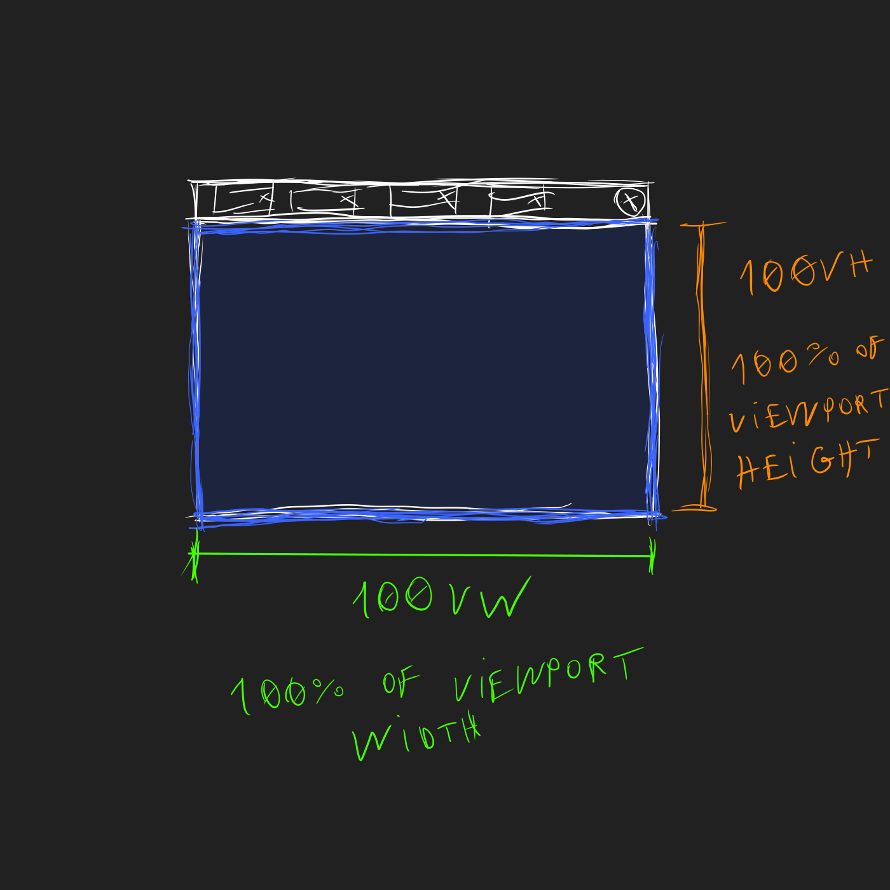
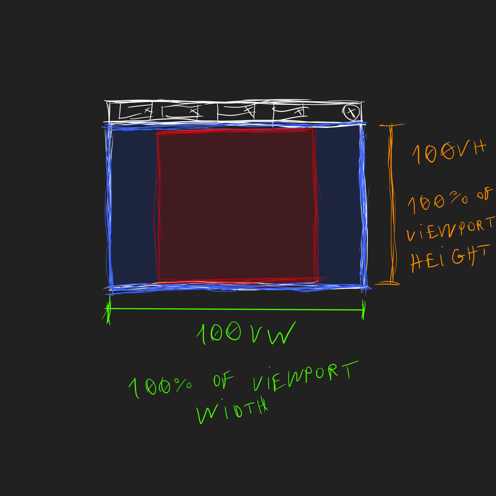

[kaki] is a minimal CSS and Javascript framework for static HTML pages. I developed it for use in my personal website .
The source code is open and avaiable at Codeberg and GitHub .
Text
Text is placed inside element [p] or inside elements [h] ( [h1], [h2], [h3], [h4], [h5] e [h6] ).
The element family [h] is used to name the document or a section in it.
Element [p] and elements [h] have line-break without word-break (no word is separated in two lines). If a paragraph contains a word too big to fit in a line, the paragraph overflows and the user can scroll it.
Example of a word too biiiiiiiiiiiiiiiiiiiiiiiiiiiiiiiiiiiiiiiiiiiiiiiiiiiiiiiiiiiiiiiiiiiiiiiiiigggggggggggggggggggggggggggggggggggggggggggggggggggggggggggggggggggggggggggggggggggggggggggggggggggggggggggggggggggggggggggggggg.
Section
Section is a textual part of a document. It contains a title ( [h1], [h2], [h3], [h4], [h5] or [h6] ).
Code example:
<section>
<h1> Title 1 </h1>
<p> Paragraph. </p>
<p> A longer paragraph. </p>
</section>
List
Example:
-
Interpreted
Python
Ruby
-
Compiled
C
C++
Div
Div is a text block delimited by element [div]. It has border and identation (horizontal margin).
If the div is not inside another div, it has complete border. If it is a nested div, it has only left border.
There is no line-break in a [div]. If an element [p] inside an [div] overflows, the entire [div] overflows, not only that paragraph.
Code example of a [div]:
<div>
<p> Parágrafo. </p>
<p> Parágrafo que não tem nenhuma palavra grande, mas muitas palavras. Essa linha não é quebrada. </p>
<p> Parágrafo muuuuuuuuuuuuuuuuuuuuuuuuuuuuuuuuuuuuuuuuuuuuuuuuuuuuuuuuuuuuuuuuuuuuuuito longo que transborda. </p>
</div>
Rendered example:
Parágrafo.
Parágrafo que não tem nenhuma palavra grande, mas muitas palavras. Essa linha não é quebrada.
Parágrafo muuuuuuuuuuuuuuuuuuuuuuuuuuuuuuuuuuuuuuuuuuuuuuuuuuuuuuuuuuuuuuuuuuuuuuito longo que transborda.
If [div] has class [line-break], there will be line-break of individual paragraphs inside it.
Code example of a [div] with class [line-break]:
<div class="line-break">
<p> Esse é um parágrafo verborrágico com muitas palavras, palavras até demais, mas que não transborda, porque nenhuma palavra é grande demais. </p>
<p> Parágrafo com uma palavra muuuuuuuuuuuuuuuuuuuuuuuuuuuuuuuuuuuuuuuuuuuuuuuuuuuuuuuuuuuuuuuuuuuuuuuuuuuuuuuuuuuuuuuuuuuuuuuuuuuuuuuuuuuuuuuuuuuuuuuuuuuuuuuuuuuuuuuuuuuuuuuuuuuuuuuuuuuuuuuuuuuuuuuuuuuuuuuuuuuuuuuuuuuuuuuuuuuuuuuuuuuuuuuuuuuuuuuito longa que faz com que ele transborde. </p>
</div>
Rendered example:
Esse é um parágrafo verborrágico com muitas palavras, palavras até demais, mas que não transborda, porque nenhuma palavra é grande demais.
Parágrafo com uma palavra muuuuuuuuuuuuuuuuuuuuuuuuuuuuuuuuuuuuuuuuuuuuuuuuuuuuuuuuuuuuuuuuuuuuuuuuuuuuuuuuuuuuuuuuuuuuuuuuuuuuuuuuuuuuuuuuuuuuuuuuuuuuuuuuuuuuuuuuuuuuuuuuuuuuuuuuuuuuuuuuuuuuuuuuuuuuuuuuuuuuuuuuuuuuuuuuuuuuuuuuuuuuuuuuuuuuuuuito longa que faz com que ele transborde.
Unidade [vq]
[vq] é uma unidade de medida, presente no código fonte de hanabi CSS, no arquivo [main.css]
--vq: min(100vw, 100vh);
Para entender a proposta dessa variável, imagine o navegador onde uma página é visualizada:

Agora, com área de visualização de páigna destacada (nem toda a área do navegador é usada para renderizar a página)

A área de visualiazção de página (em azul) é um retângulo, cujas medidas dos lados estão destacadas
Para terminar, imagine um quadrado. O maior quadrado que cabe dentro desse retângulo azul:
[vq] é igual ao lado desse quadrado vermelho, ou, em outras palavras, ao menor valor dentre [100vw] e [100vh]. Eu uso essa variável para determinar a largura do espaço no qual o conteúdo da página será posicionado. O espaço restante à esquerda e à direita ficam vazios.
Cor de texto
Texto pode ter uma dentre 3 cores, definidas pelas seguintes variáveis:
--color-text-normal
--color-text-marked
--color-text-shadowed
Existem duas exeções à isso. Âncoras (ou links) e texto dentro de botões tem outras cores.
Cor de fundo
Existem 2 cores de fundo
--color-background-1
--color-background-2
Cor de coisas clicáveis
Um elemento clicável, como um botão, tem a cor definida pela variável
--color-clickable-normal
Quando o ponteiro do mouse está sobre esse elemento, ele tem a cor de
--color-clickable-selected